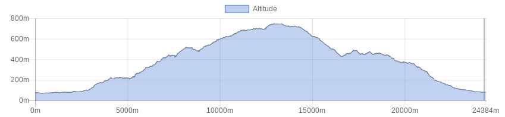

<!doctype html>
<html class="no-js" lang="en" dir="ltr">
  <head>
    <meta charset="utf-8">
    <meta http-equiv="x-ua-compatible" content="ie=edge">
    <meta name="viewport" content="width=device-width, initial-scale=1.0">
    <title>Foundation for Sites</title>
    <link rel="stylesheet" href="css/foundation.css">
    <link rel="stylesheet" href="css/app.css">
  </head>
  <style type="text/css">
  
  
h1.blu {
background-color: #2f5a55;
color: white;
font-size: 1.75rem; 
}

h1.verde {
background-color: #008e80;
color: white;
font-size: 1rem; 
}


h1.bianco {
background-color: white;
color: #506487;
font-size: 1rem; 
}

button.radius, .button.radius {
    border-radius: 3px; font-size:12px;
    }
  button.round, .button.round {
    border-radius: 1000px; font-size:1.2em; background-color:#3fa537}

</style>
  <body>
    <div class="grid-container">
      <div class="grid-x grid-padding-x">
        <div class="large-12 cell">
          <h1 class="verde">&nbsp;</h1>
        </div>
      </div>
      
       <div class="grid-x grid-padding-x">
        <div class="large-12 cell">
        <table>
        <tr>
        <td></td>
        <td><b>Tour of Historical Hamlets
</b></td>
        </tr>
        </table>
        
        </div>
      </div>
      
      <div class="grid-x grid-padding-x">
        <div class="large-12 cell">
          <h1 class="verde">&nbsp;</h1>
        </div>	
      </div>
      
      <!------ inizio tabella --->
       <div class="grid-x grid-padding-x">
        <div class="large-12 cell">
        <table>
        
         <tr>
        <td><b>Difficulty level</B></td>
        <td></td>
        </tr>
        
        <tr>
        <td><b>Lenght</B></td>
        <td>24 Km</td>
        </tr>
        
        <tr>
        <td><b>Gap</B></td>
        <td>813 + / 813 -</td>
        </tr>

        <tr>
        <td><b>Season</B></td>
        <td>All year</td>
        </tr>

        <tr>
        <td><b>Ground</B></td>
        <td>Gravel road, trail, paved road</td>
        </tr>
        
        <tr>
        <td><b>Description</B></td>
        <td>stile roadbook</td>
        </tr>
        
        
        <tr>
        <td><b>Info on track</B></td>
        <td>
        Demanding  tour rich of technical stretches  both upwards and downwards.
If you choose this itinerary you may see some of the historical hamlets that are located in our hills and enjoy the most amazing view ever from there.
The starting point is set right in the parking lot in fron of the townhall in Massa e Cozzile, that can be easily reached in 5 minutes from Montecatini Terme. After some hundreds of mt along the country road heading towards Pescia,  you make a turn towards Colle di Buggiano.
Before going upwards, you leave the main road and take the road that entered the valley. After about 1 km you take an upward road that leads you  towards the top of the itinerary, some of which on paved road  some more on white roads, and paths through the wood.
While climbing, right when you find the village of Malocchio, it is possible to get some refreshments at a characteristic grocery store,  whose name is “Da Valentino”.  While descending until the place called Croci you need to pay attention to some technical stretches that need to be go through cautiously.
In the above mentioned place called Croci there is a characteristic church (a sanctuary entirely dedicated to the Virgin of the Carmelo) with a loggia. It is there possible to get some water. Then right where you see the fountain, the road starts to go upwards for another small stretch.
The road continues through the wood crossing the valley in diagonal until reaching the village of Cozzile.  It is worth  making a change in direction in order to see this unique hamlet that may offer wonderful glimpses.
From its door located southward it is possible to enjoy the best view in the whole Valdinievole.
The itinerary continues along a nice white road that passing through olive trees and terracing  leads to the north side of the village of Massa.
At this point it is possible to take the old cobbled road that used to connect the two hamlets of Massa and Cozzile.
Once fully gone through the village of Massa (it is worth stopping there for its astonishing view), right out the door situated southward, on the lefthandside, you continue along the old road (called via della Cavaticcia) that leads right to an olive oil mill.
From there you may reach the starting point cycling through a paved road.

        </td>
        </tr>

       
       <tr>
        <td><b>Lodging</B></td>
        <td><a href="http://www.bikeexperience.tuscany.it/montecatini-bike-hotels/">Link</a></td>
        </tr>
        
        
        <tr>
        <td><b>Eating</B></td>
        <td>
      Trattoria Valentino<br>
località Malocchio, Buggiano<br>
Phone <a href="tel:057260250"> 057260250</a><br>

        
</td>
        </tr>
        
        <tr>
        <td><b>Starting point</B></td>
        <td>
        
      By car or public transport
</td>
        </tr>
        
        </table>
        
        </div>
      </div>
      <div class="responsive-embed" style="width:75%; margin-left:auto; margin-right:auto;">
                <iframe  src="./sentieri/monte_hamlets.html" frameborder="0" allowfullscreen></iframe>
        </div>
    
   <div class="grid-x grid-padding-x">
        <div class="large-12 cell"><center>
          </center>
        </div>
      </div>
  
  
  <div class="grid-x grid-padding-x">
        <div class="large-12 cell"><center>
        <a href="mtb.html" class="button   round">Back</a><center>
        </div>
      </div>
    </div>

    <script src="js/vendor/jquery.js"></script>
    <script src="js/vendor/what-input.js"></script>
    <script src="js/vendor/foundation.js"></script>
    <script src="js/app.js"></script>
  </body>
</html>
